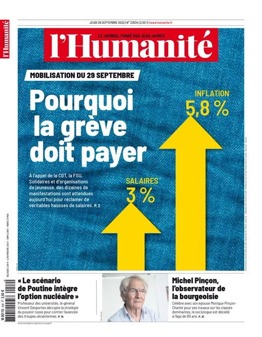

Compte rendu fédéral
À Niort, le 29 septembre, nous nous sommes mobilisés pour les salaires
Date indiquée par Facebook · 29 septembre 2022
Repères éditoriaux
Les photographies du 29 septembre documentent la mobilisation à Niort pour les salaires, l’emploi, les retraites et le pouvoir d’achat.
Texte conservé avec la publication
Ce 29 septembre, à Niort comme dans de nombreuses villes de France, mobilisation pour les salaires, l'emploi, les retraites, le pouvoir d'achat...

Sources
Archive rouge · export Facebook · AR-0002-FB-01850
À lire aussi · Salaires, emplois et retraites. Notre appel au 29 septembre